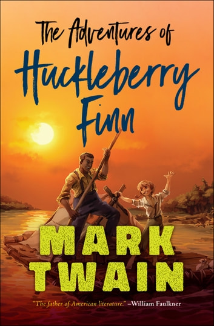
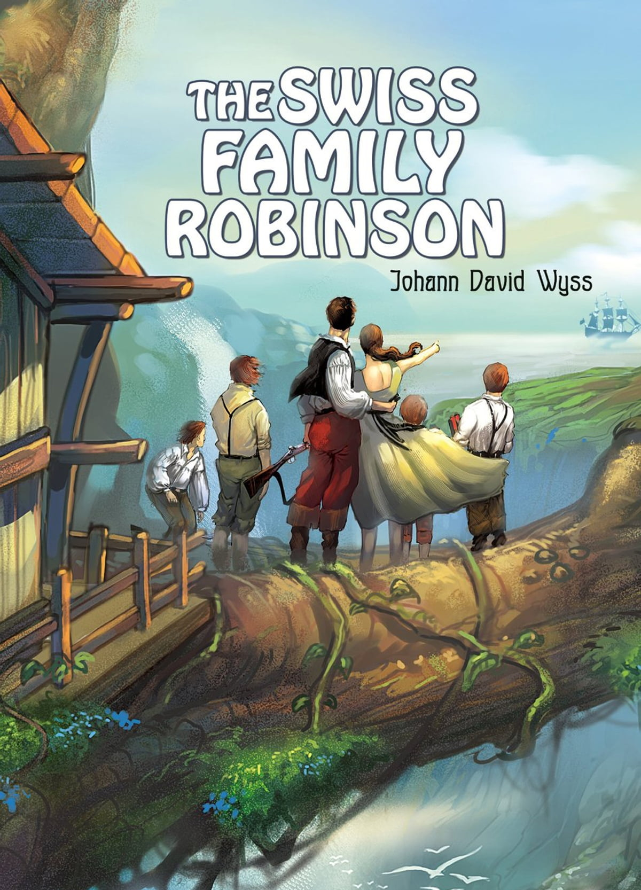

| BOOK NAME |
IMAGE |
AUTHOR |
ABOUT THE BOOK |
| The Three Musketeers |
 |
Alexandre Dumas |
The Three Musketeers is a novel which recounts the adventures of a young man named d'Artagnan after he leaves home to travel to Paris, to join the Musketeers of the Guard. D'Artagnan is not one of the musketeers of the title; those being his friends Athos, Porthos and Aramis, inseparable friends who live by the motto "all for one, one for all". In genre, The Three Musketeers is primarily a historical novel and adventure. Although adaptations tend to portray d'Artagnan and the three musketeers as heroes, the novel portrays less appealing characters, who are willing to commit violence over slight insults and through unquestioning loyalty to the king and queen, and treat their servants and supposed social inferiors with contempt and violence. |
| The Adventures of Huckleberry Finn |
 |
Mark Twain |
Who doesn’t know this rebellious teenager with the big straw hat? But Mark Twain’s second book about the young Huckleberry Finn – Adventures of Huckleberry Finn is the sequel to The Adventures of Tom Saywer – is much more than a children’s story full of adventure and excitement. It is dark in places, dealing with difficult topics such as slavery, lies, betrayal, moral actions and true friendship. It is a biting satire of American South romanticism and a poignant portray of the pre–Civil War American society as the often naive but always perceptive perspective of Huckleberry Finn questions preconceived ideas and accepted prejudices. Yet at the end of his journey down the Mississippi River, he and the runaway slave Jim arrive at the epitome of the American dream: freedom! |
| Around the World in 80 Days |
 |
Jules Verne |
“Anything one man can imagine, other men can make real.” A pioneer of the science-fiction genre, Jules Verne, a French author, is known for his writings about cosmic, atmospheric and underwater travel which runs our imagination way ahead of its time. The classic novel, Around the World in 80 Days, begins with a challenge taken up by Fogg to cover the world in just eighty days. Fogg and Jean Passepartout, embark on a fantastic journey into a world of danger and beauty. From the exotic shores of India, to rescuing a Raja's widowed wife, to the rugged American frontier, the novel visualizes the rich sceneries of the world and mesmerizes the readers with its sheer story-telling, downright entertainment and pure adventure.
|
| Treasure Island |
 |
Robert Louis Stevenson |
Think of the high seas and of a buccaneer ship; of a wild seaman with a sea chest full of gold; of Long John Silver; of a buried treasure and of young Jim Hawkins, the boy with the treasure map the key to it all. This is the Treasure Island and if you don't think of all this, the pirates will hunt you down and when they find you, for find you they sure will, they will truss you and carry you back to their ship and just before they feed you to the sharks, as you walk the gangplank with a sword digging sharp and sure into your back, they will sing their one last song for you. “Fifteen men on the dead man's chest Yo-ho-ho and a bottle of rum!”
|
| The Swiss Family Robinson |
 |
Johann David Wyss |
Swept off course by a raging storm, a Swiss pastor, his wife, and their four young sons are shipwrecked on an uncharted tropical island. Thus begins the classic story of survival and adventure that has fired the imaginations of readers since it first appeared in 1812. With optimism and boundless enthusiasm, the Robinson family undertakes the extraordinary task of constructing a home for themselves and exploring the primitive island filled with strange and beautiful creatures and exotic fruits and plants. Rich in action and suspense, The Swiss Family Robinson is an exhilarating novel takes us to a faraway place of danger and beauty, where the courageous Robinson family embarks on a thrilling new life of adventure and discovery. |